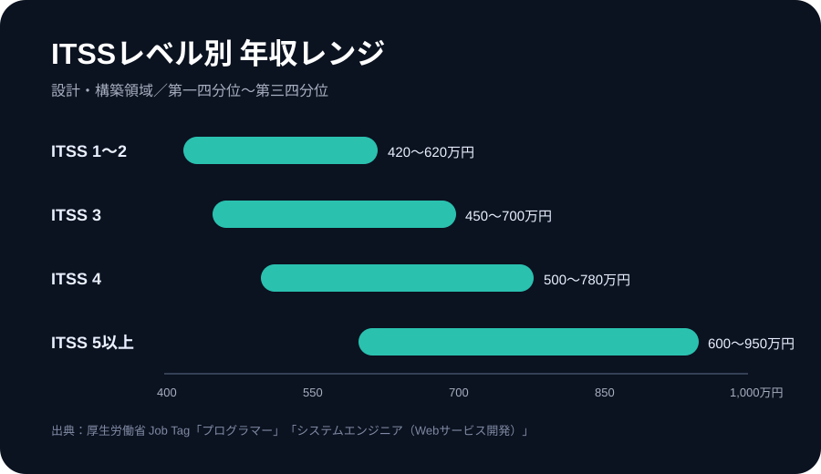
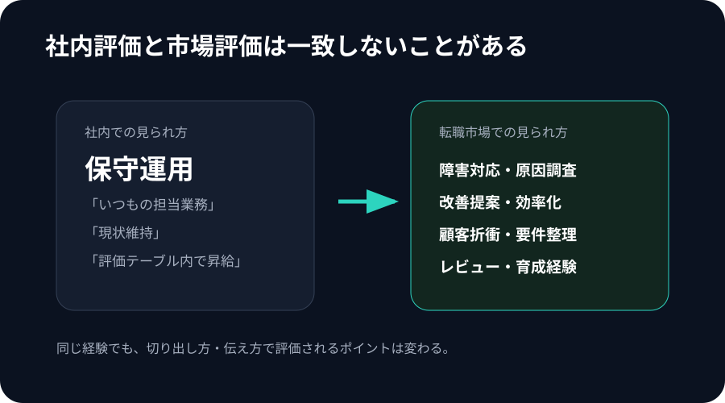
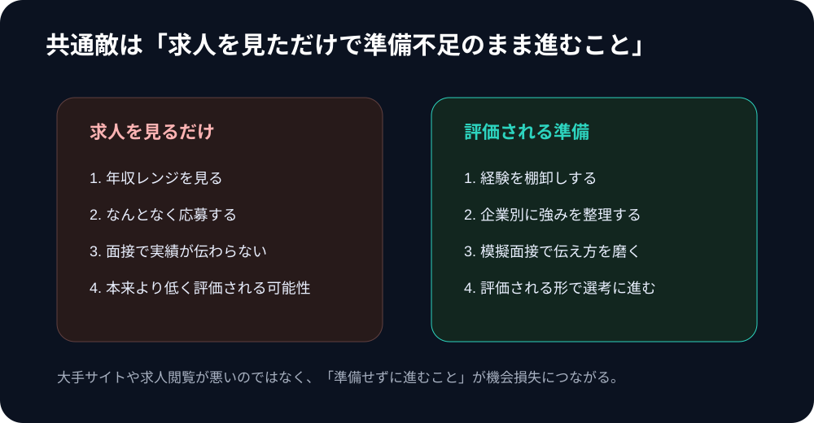
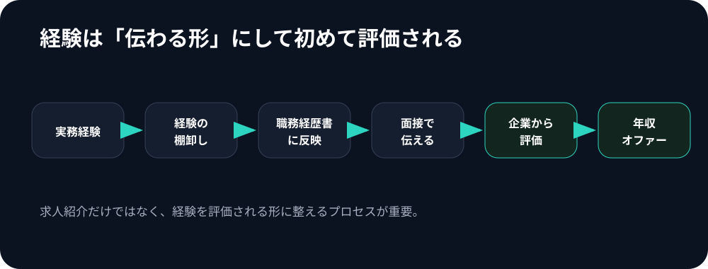

その経験、いくらで評価される？

年収アップを目指す経験者エンジニアへ／相談は無料
「もっと評価される会社があるかもしれない」——そう感じたことのあるエンジニアへ。今の会社で評価されていないからといって、あなたの市場価値が低いとは限りません。
同じ開発・運用の経験でも、会社・職種・評価制度・伝え方によって、年収レンジは大きく変わります。
転職するかどうかを決める前に、まずは「自分の経験が、転職市場でどう評価されるのか」を確かめてみませんか？
無料で市場価値を相談する→相談は無料。転職するかどうかは、相談してから決めれば大丈夫です。
年収アップを目指す経験者エンジニアへ／相談は無料
この記事で分かること
毎年昇給しても数千円〜1万円程度
担当範囲は広がったのに給与は変わらない
同期や知人エンジニアの年収を聞いて焦った
このまま今の会社にいていいのか不安
転職したい気持ちはあるが、自分の市場価値が分からない
もし一つでも当てはまるなら、あなたの能力が低いのではなく、今の会社の評価制度や給与水準が合っていないだけかもしれません。
年収は、スキルだけでなく、会社の給与テーブル・利益率・評価制度・担当案件によって変わります。厚生労働省 job tag では、ITSSレベル別の年収レンジに大きな幅が示されています。
例えば設計・構築領域では、ITSSレベル3の年収レンジは450万〜700万円、レベル4では500万〜780万円とされています。同じ「エンジニア」でも、評価される環境によって年収の上限は変わります。

あなたの年収が伸びない理由は、能力不足ではなく、今いる会社の評価制度や給与水準にあるのかもしれません。
社内では「普通の保守運用」と見られている経験でも、別の会社では高く評価されることがあります。今の会社では当たり前でも、こんな経験はありませんか？

同じ経験でも、どう切り出して伝えるかで、評価は変わります。
企業が見ているのは、単なる使用技術ではありません。面接で見られているのは、こうしたポイントです。
スキルが「ある」ことと、スキルを「評価される形で伝えられる」ことは、違います。
ここで損をしやすいのが、転職活動に慣れていない2社目・3社目のエンジニアです。
大手転職サイトやスカウトサービスで求人を見ること自体は、悪くありません。ただし求人を見るだけでは、自分の経験をどう武器にするかまでは分かりません。

本当に年収アップを狙うなら、必要なのは求人探しだけではなく、次のような準備です。
「スキルがあるから大丈夫」と準備不足のまま面接に進むと、本来より低く評価される可能性があります。
実務経験2年以上のエンジニアは、ポテンシャルではなく「これまで何をして、次に何ができるか」を見られます。だからこそ、求人紹介だけでなく、経験の棚卸し・面接対策・企業別の選考準備まで支援してくれるエージェントを選ぶ意味があります。

大切なのは求人を紹介してもらうことではなく、
あなたの経験を企業に評価される形で伝えられる状態にすることです。
TechGO は、実務経験2年以上のITエンジニア向け転職エージェント。単に求人を紹介するだけでなく、「評価されるための準備」まで支援してくれる点が特徴です。
面接で自分の実績を伝えるのが苦手なエンジニアにとって、模擬面接を何度でもできる点は大きなメリットです。
コンサル業界・ハイクラス求人に強いMyVisionと同じ運営会社。課題解決力を活かして高年収を目指せるポジションと相性があります。
平日は業務が忙しいエンジニアでも、土曜日に選考を進められる機会があります。
IT業界を理解したアドバイザーが支援。技術職ならではの経験や強みを整理しやすい点も魅力です。
市場価値を知るだけでなく、企業に正しく評価される準備までしたいなら、TechGOは相性の良い選択肢です。
今の会社だけを基準に、自分の価値を決めてしまうのはもったいないかもしれません。まずは、あなたの経験が転職市場でどう評価されるのかを確認してみませんか？
TechGOで無料相談する→相談は無料。「話を聞いてから考える」でも大丈夫です。
本ページはプロモーションを含みます